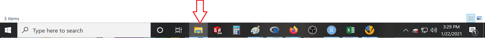
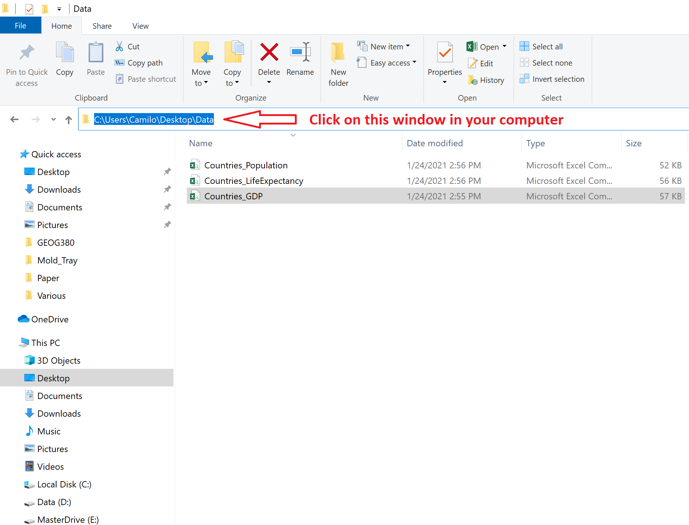
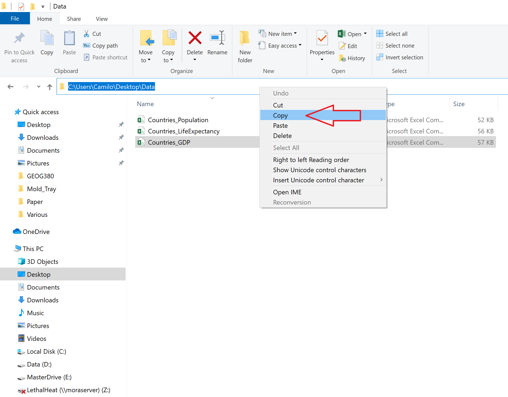
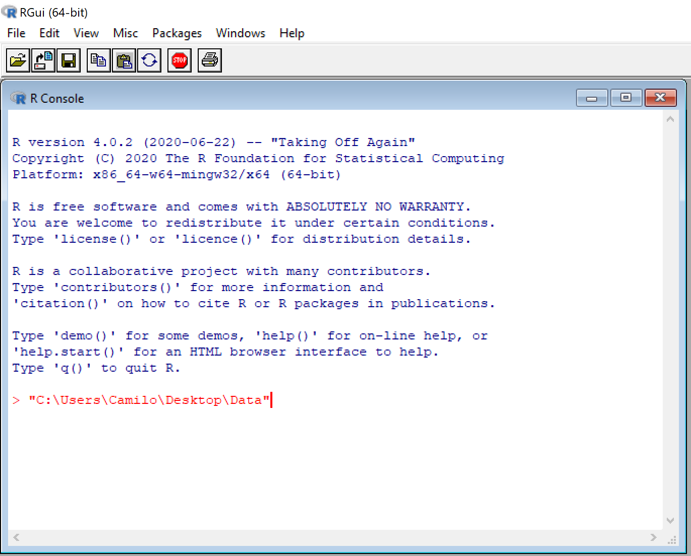
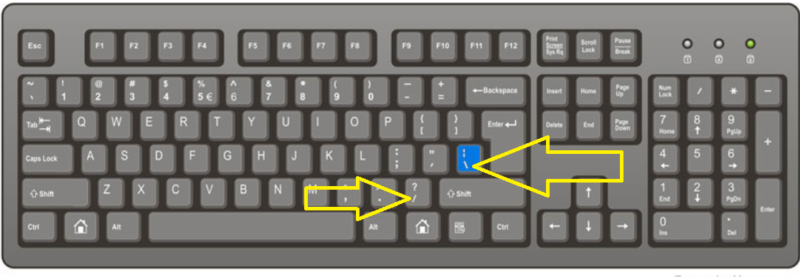

Loading your own data into R
R also allows you to import your own data from a diversity of formats. Here we will use the most basic one, which is to import .csv files (the so-called comma delimited data). In this type of file, data are listed by rows, with the number between commas in a row indicating the columns.
To load a .csv file in R, you use the command read.csv(). Between brackets you put the path to where the file is located. You write that path between quotation. It sounds complicated, but it is simple. Let’s just try an example.
Create a folder in your local desktop called “Data”. It is good practice to keep your data and codes in separated folders that you can then easily identify by the name alone.
Download a csv file from here. Right click on the page and click on “Save page as” in the pop-up window. Name the file “Countries_GDP.csv”, and navigate to the “Data” folder you just created to save the file in there. Click “Save”. That file should now appear in your “Data” folder.
Now that you have the csv file in your local hard-drive, you can load it into R. For this you need to do a couple things. First, get the path to where the file is at. For this, click on your windows explorer (that is the button that looks like a folder in your desktop, see image below)

Figure 3.2: Windows explorer
Navigate to the folder Data where you saved the file, and put the mouse cursor in the selectable window (See arrow in image below). That will reveal the path where the file is saved in your computer.

Figure 3.3: Getting path to file
Next, right click on that same window, and click on Copy. That will copy the path to your file (See image below).

Figure 3.4: Getting path to file
Open R, right click anywhere inside the main window of R and click on “Paste”. It should look something like this:

Figure 3.5: Getting path to file
Now you need to replace each back-slash for a forward-slash in your path. The position of those keys in my keyboard are shown in the image below.

Figure 3.6: Slash keys in keyboard
So the path to the file should be change from this:
to this:
Now, to the path of the folder in which you have the file, you need to add the file name, like this:
I have to tell you that when I got started in R. A colleague sent me a file and told me to open his file in R. It sounded simple at the time, but it took me two days to figure out all these tiny things about setting the file correctly. Back in those days the internet was not so full of useful tutorials about how to do this. Ok, let’s keep going.
Now add to your path the R function that is used read csv files, which is “read.csv()”, like this:
I suggest you attach this file to a variable name, so you can call it later.
That is it, now you have loaded your data into R. Check it out by looking at the top part of the database
## country continent year gdpPercap
## 1 Afghanistan Asia 1952 779.4453
## 2 Afghanistan Asia 1957 820.8530
## 3 Afghanistan Asia 1962 853.1007
## 4 Afghanistan Asia 1967 836.1971
## 5 Afghanistan Asia 1972 739.9811
## 6 Afghanistan Asia 1977 786.1134By the way, if you know that the csv file in the web will not be deleted or moved, you can read the data from the web directly using the URL to the file, instead of the path. Like this,